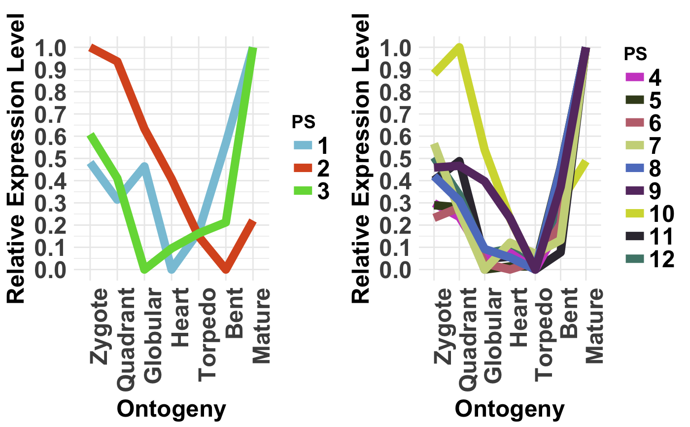
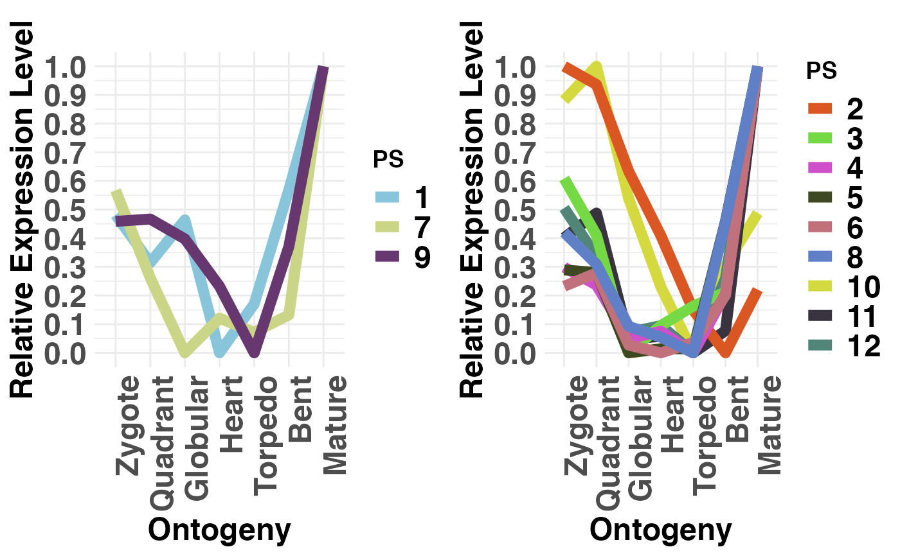
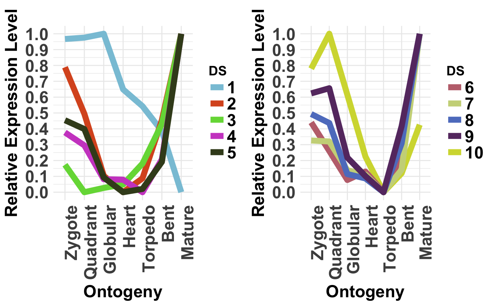

This function computes for each age category the corresponding relative expression profile.
For each age category the corresponding relative expression profile is being computed as follows:
$$f_js = ( e_js - e_j min ) / ( e_j max - e_j min )$$
where \(e_j min\) and \(e_j max\) denote the minimum/maximum mean expression level
of phylostratum j over developmental stages s. This linear transformation corresponds to
a shift by \(e_j min\) and a subsequent shrinkage by \(e_j max - e_j min\).
As a result, the relative expression level \(f_js\) of developmental stage s
with minimum \(e_js\) is 0, the relative expression level \(f_js\) of the developmental
stage s with maximum \(e_js\) is 1, and the relative expression levels \(f_js\) of
all other stages s range between 0 and 1, accordingly.
Usage
PlotRE(
ExpressionSet,
Groups = NULL,
modules = NULL,
legendName = "age",
xlab = "Ontogeny",
ylab = "Relative Expression Level",
main = "",
y.ticks = 10,
adjust.range = TRUE,
alpha = 0.008,
...
)Arguments
- ExpressionSet
a standard PhyloExpressionSet or DivergenceExpressionSet object.
- Groups
a list containing the age categories for which mean expression levels shall be drawn. For ex. evolutionary users can compare old phylostrata: PS1-3 (Class 1) and evolutionary young phylostrata: PS4-12 (Class 2). In this example, the list could be assigned as,
Groups = list(c(1:3), c(4:12)). The group options is limited to 2 Groups.- modules
a list storing three elements for specifying the modules: early, mid, and late. Each element expects a numeric vector specifying the developmental stages or experiments that correspond to each module. For example,
module=list(early = 1:2, mid = 3:5, late = 6:7)devides a dataset storing seven developmental stages into 3 modules. Default ismodules = NULL. But if specified, a shaded are will be drawn to illustrate stages corresponding to the mid module.- legendName
a character string specifying the legend title.
- xlab
label of x-axis.
- ylab
label of y-axis.
- main
main text.
- y.ticks
number of ticks that shall be drawn on the y-axis.
- adjust.range
logical indicating whether or not the y-axis scale shall be adjusted to the same range in case two groups are specified. Default is
adjust.range = TRUE.- alpha
transparency of the shaded area (between [0,1]). Default is
alpha = 0.1.- ...
place holder for old version of PlotRE that was based on base graphics instead of ggplot2.
Value
a plot showing the relative expression profiles of phylostrata or divergence-strata belonging to the same group.
Details
Studying the relative expression profiles of each phylostratum or divergence-stratum enables the detection of common gene expression patterns shared by several phylostrata or divergence-strata.
Finding similar relative expression profiles among phylostrata or divergence-strata suggests that phylostrata or divergence-strata sharing a similar relative expression profile are regulated by similar gene regulatory elements. Hence, these common phylostrata or divergence-strata might govern similar processes in the given developmental time course.
References
Domazet-Loso T and Tautz D. 2010. "A phylogenetically based transcriptome age index mirrors ontogenetic divergence patterns". Nature (468): 815-818.
Quint M et al. 2012. "A transcriptomic hourglass in plant embryogenesis". Nature (490): 98-101.
Examples
# read standard phylotranscriptomics data
data(PhyloExpressionSetExample)
data(DivergenceExpressionSetExample)
# example PhyloExpressionSet
PlotRE(PhyloExpressionSetExample,
Groups = list(c(1:3), c(4:12)),
legendName = "PS")

# or you can choose any combination of groups
PlotRE(PhyloExpressionSetExample,
Groups = list(c(1,7,9), c(2:6,8,10:12)),
legendName = "PS")

# example DivergenceExpressionSet
PlotRE(DivergenceExpressionSetExample,
Groups = list(c(1:5), c(6:10)),
legendName = "DS")
